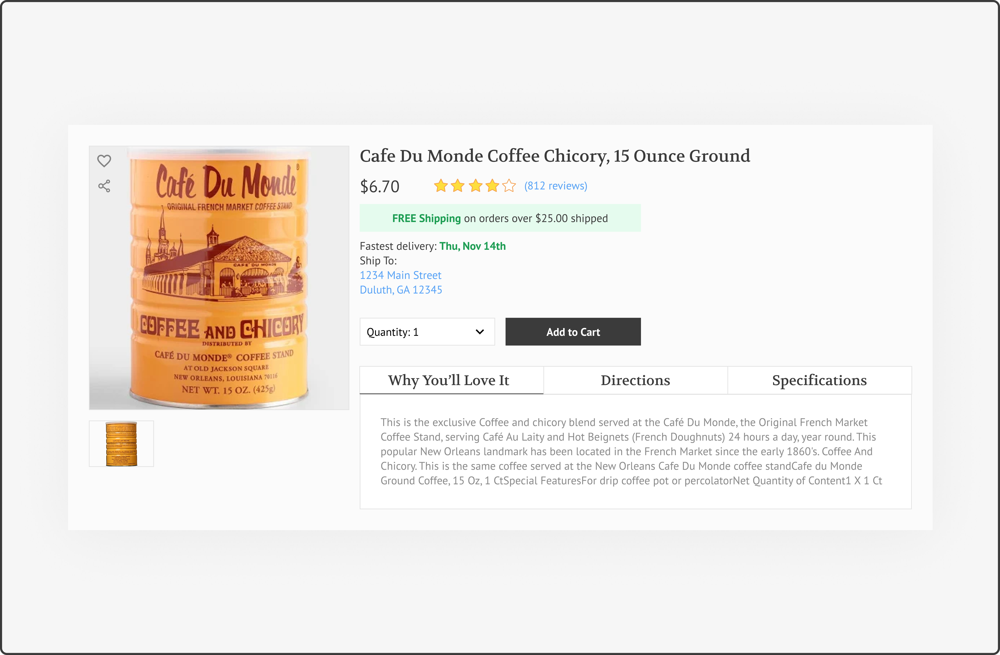

UI DESIGN CHALLENGE
In order to hone on my design skills, I decided to participate in the 100 Day Design Challenge. I aim to improve my visual brainstorming process, consistency, and to learn vector illustration. This project is being updated every other week.
DISCLAIMER: I unterstand that for a design to work, there must be extensive research, testing, and analysis in order to provide a solution to a problem. The prompts for this challenge were too vague for any real problem solving to occur. However, as a newbie in the field, I view this as a chance to think outside the box so I could test out crazy ideas and to understand the line between trending design and practical design.
DAY 001: SIGN UP
A mobile sign up page for Craiglist. Username and identity is very nontransparent on the platform, username is or handle is not necessary. Thus, only email is required to sign up.

DAY 002: CREDIT CARD CHECKOUT
This is a checkout process that helped me learn to think about the content that requires during a checkout process.

DAY 003: LANDING PAGE (ABOVE THE FOLD)
I’ve been on the hunt to find a pet friendly sofa likely, it’s been a challenge finding one that can withstand my cats’ claws. This is an effort to create a potential site for a pet-friendly furniture store.

DAY 004: LOADING PAGE
This is a loading screen inprired by a Japanese anime forest spirit, Totoro.

DAY 005: VECTOR
I was feeling unmotivated and did not feel like working on ay pending projects, so I decided to work on my illustration skills by creating one of my favorite food.

DAY 006: USER PROFILE
This is a user profile I created for an existing mobile app called Webtoon. I noticed their bottom navigation was confusing and there is no user profile option availble so I decided to create one, renamed the bottom navigation, and reorganized some information on the app. I also practiced my vector drawing by creating the avatar.
DAY 007: 404 PAGE
This is a 404 page, displayed when a page is not found.
DAY 008: SOCIAL SHARE
Have you ever went to a bathroom, do your thing, and realized there's no toilet paper?! The prompt for this day was to create a share button. Instead of creating just a button, I decided to design a share functionality for a conceptual app. This app will send a help message to the user’s added contact/social network whenever he/she runs out of toilet paper.
DAY 009: FLASH MESSAGES
I came across this article talking about a new invention in Japan where the device would detect when a snack is stolen from the fridge. Since the prompt for this day is to create flash messages, I wondered if this invention has an app, what its flash messages would look like. I also created an app logo, which is a Japanese mochi, for this invention. This is an idea I had in mind.
DAY 010: E-COMMERCE SHOP (SINGLE ITEM)
This is a design for a coffee item. For this task, I focused mostly on information architecture. I studied how Amazon, eBay, Target, and Walmart display their items online. Their differences and similarities. I noticed that each platform display the item based on their business strength. Amazon included a lot of fast shipping options along with links to promote their Amazon Prime delivery deals. Where as Target and Walmart provide “pick up in store” for a lower delivery rate.
DAY 011: DASHBOARD
This is a dashboard design to log in and keep track of job applications. The companies and data in this task DOES NOT reflect my personal application process. The company names, job titles, interests, etc. are randomized and pulled from search results on various platforms.
DAY 012: VECTOR ILLUSTRATION
This day, I learned to better my vector skills by improving an anime version of myself. Some earlier versions were used in my "About" page in this portfolio, there were created based on my hand drawings, but I've always wanted to create a digital version that is more refined.
DAY 013: DASHBOARD
This is a new years countdown board.